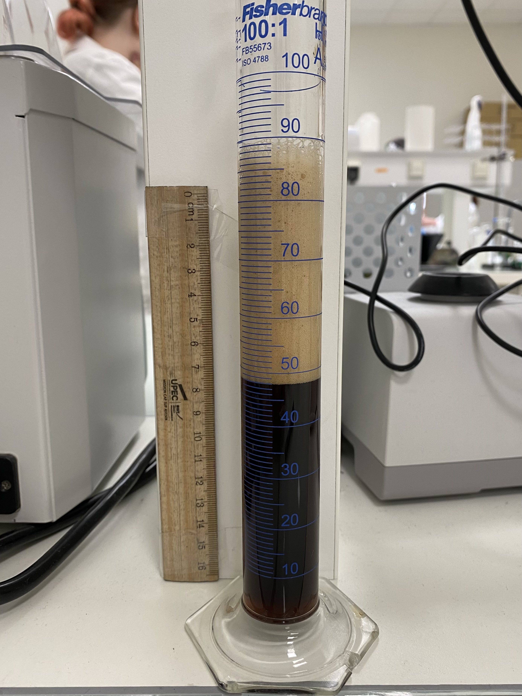
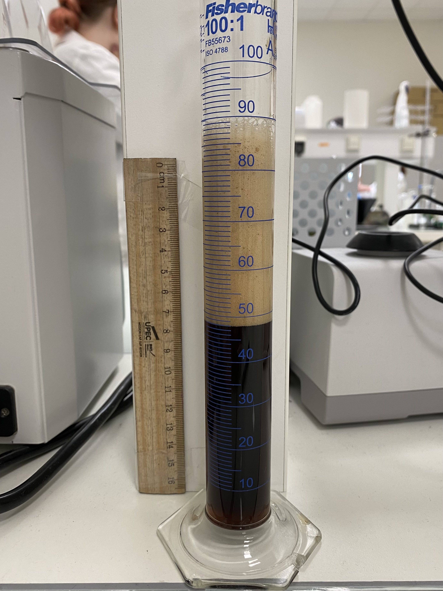
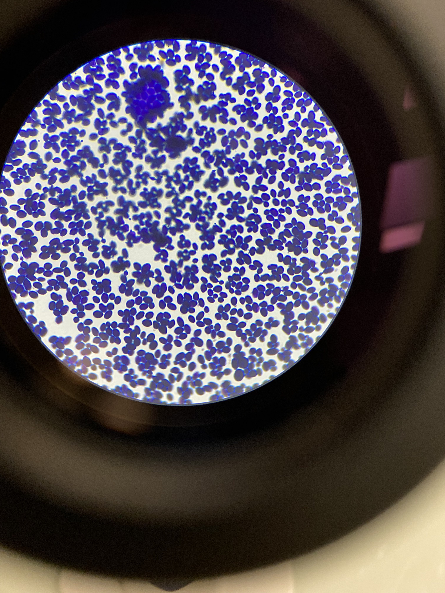

Et pour nos bières ?

Après avoir réalisé toutes ces étapes, nous avons réalisé des analyses. Nous pouvons affirmer que la mousse de nos bières est stable et tient bien. En suivant l’épaisseur de la mousse au cours du temps, nous avons estimé qu’elle tenait environ 20 minutes.
Notre bière a un taux d’alcool de 5,7% ce qui est légèrement inférieur au taux d’alcool moyen d’une black IPA qui est d’entre 6 et 7%.
 

En observant le taux de CO2 et de saccharose dans notre bière, nous en sommes venu à conclure que nos levures ont bien exercé leurs fonctions. Nous pouvons observer un bon taux de sucre et beaucoup de CO2. En effet, nous avons calculé un taux de 332 g/L de CO2 et 8% pour 100g de moût dans nos bouteilles.
Nous avons également vérifié que notre bière n’était pas contaminée. Pour cela, nous avons observé les levures au microscope. Nous avons uniquement observé des micro-organismes ronds, blancs et de petite taille caractéristiques des levures ce qui signifie que notre bière n’est pas contaminée.


Notre EBC est de 108, la bière est donc très foncée (c’est l’avant dernier stade sur l’échelle EBC).